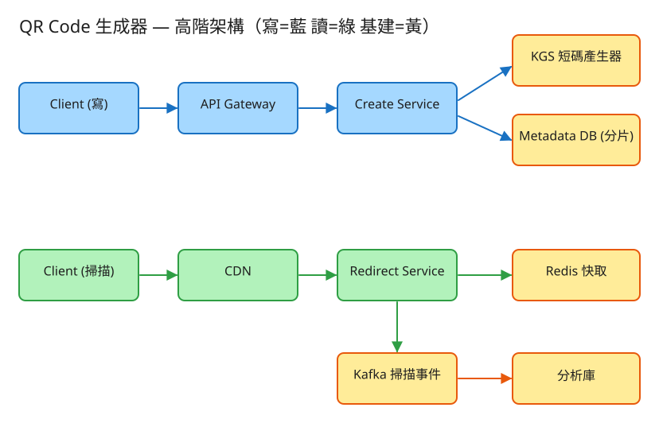

① QR Code 生成器 · 初學者友善版
D 串流計算/儲存分發
看故事就懂
輕鬆讀 25 分鐘
🧠 這份怎麼讀？
這份用「大腦比較好吸收」的方式重寫：先講生活比喻 → 把系統拆成小關卡 → 邊讀邊考自己。
分成兩部分：Part 1 概念（這系統在幹嘛）、Part 2 工程細節（怎麼真的蓋出來，一樣白話）。
遇到 💭 停一下 就先自己想 3 秒再往下看——這叫「提取練習」，比一直往下滑記得更牢。
1. 60 秒搞懂它在幹嘛
你一定掃過 QR Code——對著餐廳桌上的方格圖一掃，菜單就跳出來。把那張固定不會變的小方格圖印出來，很簡單，手機 App 隨便就能做。
但這題真正難的，是「動態 QR」：海報上印好的那張 QR 不能再改了（都印出去貼滿全城了），可是你想換掉它指向的內容——今天連到春季活動、下個月想改成夏季活動。而且這張海報可能被幾百萬人同時掃。
🔑 一句話
動態 QR = 一張「印了就不能改」的圖，卻要能隨時換掉它連去哪、還要扛住幾百萬人同時掃。秘訣是：QR 裡藏的不是真正的網址，而是一個「轉接代碼」。
2. 最關鍵的一招：QR 裡放的是「門牌」，不是地址
這是整題最重要的一個觀念，懂了它，後面全都通了。先想一個生活情境——
🏨 飯店房間的門牌 vs 房客
飯店 301 號房的門牌，釘在門上永遠不會換。但裡面住的房客天天在換：今天是你，明天是別人。
別人要找「住 301 的人」，只要記住「301」這個門牌就好——門牌不變，住的人會變。
動態 QR 就是這樣設計的：那張印出去的 QR，裡面藏的不是真正的目標網址，而是一個短短的代碼，像 qr.io/abc123。這個 abc123 就是「門牌」——印出去就固定了。而「房客」（真正要連去的網址）存在你的系統裡，隨時可以換。
☎️ 再一個比喻：總機幫你轉接分機
你打公司總機，說「我要找會計部」。總機不用換電話號碼，直接幫你轉接到當下會計部坐的那支分機。
哪天會計部換座位了？總機改一下轉接設定就好，你打的號碼完全不用變。
所以使用者掃了 QR、手機連到 qr.io/abc123 時，你的系統就像總機一樣：查一下「abc123 現在要轉去哪」，然後把使用者轉接過去。這個「掃了之後幫你轉去真正目標」的動作，工程上叫 轉址（redirect / 302）。
💭 停一下：為什麼「QR 裡放短碼而不是直接放目標網址」這招，能讓你不用重印海報就換掉內容？
看答案
因為 QR 印出去的是「門牌（短碼 abc123）」，不是「真正的地址」。真正的地址（目標網址）存在系統裡。換內容時，你只改系統裡「abc123 對到哪個網址」這筆設定，門牌 abc123 完全沒變，所以海報不用重印。如果當初 QR 裡直接編進真網址，那網址就跟著印死了，改不了。
3. 把系統拆成 3 個關卡
別被「系統」嚇到。整件事其實就是闖 3 關，一關一關來：
1建立：發一個「門牌」給你
使用者說「我要一個動態 QR，連到我的春季活動頁」。系統要做的是：發一個還沒人用過的短碼（門牌）給他，例如 abc123，記下「abc123 → 春季活動頁」，再把 qr.io/abc123 畫成 QR 圖回傳。
🎟️ 比喻：抽號碼牌
就像去銀行抽號碼牌——機器確保每個人拿到的號碼都不一樣、不會撞號。系統發短碼也一樣，最怕兩個人拿到同一個門牌（那就會轉錯地方）。
👉 「怎麼保證每個短碼都不重複？」是這關的核心，Part 2 會講一個叫 KGS（發號器）的招數。
2轉址：掃了之後，把人轉到真正目標
有人掃了 QR、手機連到 qr.io/abc123。系統像總機一樣：查「abc123 現在要轉去哪」，查到春季活動頁，就回一句「請往這邊走 →」把人轉過去。
⚡ 比喻：這關要「快」，像反射動作
掃 QR 的人最沒耐心——慢半秒就覺得卡。所以這關要像膝反射一樣快：不能每次都跑去翻厚厚的資料庫慢慢找。
關鍵字：讀多寫少。建立 QR 的人很少（偶爾建一張），但掃的人超級多（一張海報幾百萬人掃）。所以這關要想辦法查得飛快——下一個關卡就在解這件事。
3扛量：幾百萬人同時掃，怎麼不被壓垮？（快取 + CDN）
熱門海報可能幾百萬人在同一天掃同一個碼。如果每次都跑去資料庫查「abc123 轉去哪」，資料庫會被問到累垮。
📌 比喻：把常被問的答案貼在櫃台
櫃台小姐如果每次都跑進倉庫翻資料回答客人，會累死。聰明的做法是：把最常被問的答案抄一張便利貼，貼在櫃台，下次直接念便利貼，不用進倉庫。
系統的「便利貼」叫 快取（Redis）：把熱門短碼的答案先記在一個超快的小本子裡，大部分人來問都直接念本子，不用驚動資料庫。
🏪 比喻：CDN 就是「開在你家樓下的分店」
QR 的圖片還可以更聰明：與其每個人都跨海連到總公司拿圖，不如在世界各地開分店（CDN），把圖片副本放在離使用者最近的地方。台灣人拿台灣分店的、美國人拿美國分店的，又快又省。
✅ 三關一句話
① 建立：發一個不撞號的門牌（短碼）→ ② 轉址：掃了像總機幫你轉接 → ③ 扛量：用便利貼（快取）和樓下分店（CDN）撐住幾百萬人同時掃。
4. 設計時最怕的 3 件事
工程上的「取捨」聽起來很抽象。換個方式記：這個系統最怕三件事，每個設計都是為了避開某個「怕」。
😱 怕「撞號」
兩個人拿到同一個門牌 abc123，那掃同一張 QR 的人會被轉到別人的目標——大災難。所以發短碼絕對不能重複。
（Part 2 的 KGS 發號器就是專門解這個：像抽號碼牌，保證每張號碼都獨一無二。）
😱 怕「慢」
掃 QR 的人最沒耐心，轉址慢一點就被嫌卡、甚至以為壞掉了。所以轉址這條「關鍵路徑」要極快（目標 50 毫秒內）。
手段就是快取（便利貼）：大部分查詢不要驚動資料庫。讀多寫少，就把讀路徑加速到極致。
😱 怕「被猜到 / 被亂掃」
如果短碼是 abc123、abc124、abc125 這樣一個接一個，壞人就能從 0 一路猜下去，把所有人的 QR 都掃出來看。
所以短碼要看起來像亂碼、猜不到下一個。另外目標網址可能被人改成釣魚詐騙網站，所以還要做安全檢查（黑名單）。
5. 一張圖看懂

✏️ 用 Excalidraw 開啟編輯（diagram.excalidraw）
白話導讀，分成「建立」和「掃描」兩條路：
- ✍️ 建立路（少數人走）：使用者送來目標網址 → 發號器(KGS)給一個不撞號的門牌 → 記進資料庫「門牌 → 網址」→ 回傳 QR 圖。
- 📷 掃描路（超多人走）：手機掃碼連進來 → 先問樓下分店(CDN)和便利貼(Redis 快取)→ 查到目標就轉址過去 →（順手）把這次掃描丟到Kafka記帳，不耽誤轉址。
- 📊 記帳路（背景做）：掃描事件在背景慢慢聚合算總數，就算這條掛了，掃描體驗也不受影響。
6. 名詞白話翻譯
看完上面，這些詞你其實都已經懂了，這裡只是把「工程術語 ↔ 白話」對起來，Part 2 會用到：
| 工程術語 | 白話解釋 |
|---|
| 動態 QR | 「門牌不變、房客可換」的 QR：印出去後還能改連去哪 |
| 短碼 (short code) | QR 裡藏的「門牌」，例如 abc123 |
| 轉址 / 302 | 總機幫你轉接：掃了之後把你導去真正的目標網址 |
| 讀多寫少 | 建 QR 的人少、掃 QR 的人超多（可能差 100 倍以上） |
| 快取 (Redis) | 貼在櫃台的「便利貼」，常被問的答案直接念，不進倉庫 |
| CDN | 開在世界各地的「分店」，圖片就近拿，又快又省 |
| KGS（發號器） | 像銀行的抽號碼牌機，保證每個短碼都不撞號 |
| base62 | 用 0-9、a-z、A-Z 共 62 個字元來編短碼（比只用數字短很多） |
| QPS | 每秒幾筆請求（衡量「多忙」的單位） |
| API | 系統之間講好的「點餐單」格式：你給我什麼、我回你什麼 |
| 分片 (sharding) | 資料太多一個倉庫裝不下，拆成好幾個倉庫分開放 |
| Kafka | 掃描事件先丟進去排隊的「輸送帶」，背景慢慢處理 |
| 最終一致 | 掃描總數不用「立刻」精準，晚幾秒對上就好 |
🛠️ Part 2 ｜ 工程細節（一樣白話）
概念懂了，來看「真的要動手蓋，得想清楚哪些事」。一樣用比喻，不用怕。數字不必背，重點是「有感」。
7. 要準備多大？（規模估算）
🍱 比喻：辦活動前先估人數
辦活動前，你會先估「大概來幾個人」，才決定訂幾個便當、租多大場地。
系統設計也一樣：先估數字，才知道要準備多大的「料」。這一步叫規模估算。
我們估幾個關鍵數字（數字不必背，重點是感受它的「形狀」）：
| 估什麼 | 大概數字 | 所以呢？ |
|---|
| 每天建幾張 QR（寫） | ~1000 萬張/日 | 換算約每秒一百多筆——其實不多 |
| 每天被掃幾次（讀） | 每張平均被掃 ~100 次 | 掃描量是建立的 100 倍以上，這才是重點 |
| 要記多少資料 | 每筆約 500 位元組，存 5 年 | 累積到 ~9 TB——一個倉庫快裝不下了 |
| 門牌（短碼）夠用嗎 | 62 個字元、排 7 位 | 約 3.5 兆種組合，幾十年都用不完 |
⚖️ 關鍵洞察：這是一個「嚴重偏心」的系統
建 QR 的人少、掃 QR 的人爆多——讀遠多於寫。就像一本書，寫的人只有作者一個，看的人有幾百萬。
所以整個設計的重心，全押在「怎麼把『讀（掃描轉址）』做到又快又能扛量」——這就是為什麼前面拚命講快取和 CDN。
💭 停一下：既然 QR 圖可以「由短碼當場重畫出來」，為什麼還值得放到 CDN 分店？
看答案
因為「重畫一張圖」雖然不難，但幾百萬人同時來、每個人都叫你的伺服器畫一次，CPU 還是會吃不消。把畫好的圖放 CDN 分店，使用者就近拿副本，你的伺服器幾乎不用出力。而且 QR 圖永遠不會變（裡面是門牌，不是目標），所以可以放心讓 CDN 長期快取——這正是「動態 QR」的精髓：圖永遠不變，只有門牌對到的目標會變。8. 系統之間怎麼溝通？（API）
🍔 比喻：點餐單
API 就是兩個系統之間講好的「點餐單格式」：你要點什麼（給我哪些欄位）、我回你什麼。
講好格式，雙方就能合作，不用知道對方廚房怎麼運作。
這題只要記住四張「點餐單」：
① 建立一張動態 QR（寫，少見）
POST /api/v1/qrcodes
給我：{ 目標網址, 尺寸, 容錯等級 }
我回：{ 門牌:"abc123X", 短網址:"qr.io/abc123X", 圖片網址:"cdn.../abc123X.svg" }
回給你三樣東西：門牌、可掃的短網址、還有放在 CDN 分店的圖片網址。
② 換目標（動態 QR 的賣點！）
PATCH /api/v1/qrcodes/{門牌}
給我：{ 新的目標網址 }
這就是「總機改轉接設定」——門牌 abc123X 完全沒動，海報不用重印，只是它現在轉去新地方。
③ 掃描轉址（讀，超高頻，最關鍵的一張單）
GET /{門牌} → 「請往這邊走 →」轉到目標網址（302）
（順手非同步記一筆「被掃了」，但不耽誤轉址）
為什麼「順手、非同步」記掃描？因為轉址要快，不能為了記帳卡住使用者。先把人轉走，記帳交給背景慢慢做。
④ 看掃描統計
GET /api/v1/qrcodes/{門牌}/stats → { 總掃描數:1234, 每日:[...] }
9. 系統要記住哪些事？（資料模型）
📒 比喻：兩本性質完全不同的筆記本
系統要把資料記在「筆記本」（資料表）裡。這題的重點是：有兩本性質很不一樣的本子，千萬不能放同一本。
🔑門牌簿（門牌 → 目標）
每張 QR 一列：門牌(主鍵)、目標網址、擁有者、容錯等級、建立/更新時間。
特色：小、可改、要查得快
這本就是「總機的轉接表」。量不大（一張 QR 一列），但會被改（換目標）、會被瘋狂查（每次掃描）。所以熱門的幾筆要進便利貼（快取）。
📈掃描流水帳（每掃一次記一筆）
每次掃描一筆：門牌、時間、地區、裝置。這本是只增不改、量爆大的流水帳。
為什麼要分開放？
如果把「每秒幾萬筆的掃描流水帳」硬塞進「門牌簿」那本，會把它拖垮，連帶害轉址變慢。
所以掃描流水帳另外走 Kafka 輸送帶 → 專門算統計的庫，門牌簿保持輕巧。讓忙的歸忙的、靜的歸靜的。
10. 哪裡會塞車、怎麼拓寬？（擴展）
🚗 比喻：找出塞車路段，拓寬它
系統變大時，總有某個環節會先「塞車」。工程師的工作就是找出最會塞的地方，把它拓寬。一個一個看：
| 哪裡會塞車 | 怎麼拓寬 |
|---|
| 一台伺服器擋不住這麼多掃描 | 轉址服務做成「誰來都一樣、不記私房狀態」，就能無腦多加幾台分攤 |
| 每次掃描都跑去問資料庫 | 加便利貼（Redis 快取），熱門碼直接念便利貼（命中率可達 95%↑） |
| 資料累積到 9 TB，一個倉庫裝不下 | 依門牌把資料拆進好幾個倉庫（分片） |
| 外國人掃要跨海連回總公司，很慢 | 各地開分店（CDN + 多區域），就近轉址、就近拿圖 |
| 掃描流水帳每秒幾萬筆，寫爆了 | 先丟 Kafka 輸送帶緩衝，背景批次聚合，不必每筆即時精算 |
11. 還有哪些「魚與熊掌」？（取捨）
「Part 1 的三個怕」是核心。這裡補幾個常被面試官追問的：
⚖️ 發短碼：抽號碼牌 vs 算指紋
抽號碼牌（KGS 發號器）：預先準備一大池不重複的號碼，服務要用就批次領一段，保證不撞號、又快，面試首選。
算指紋（雜湊）：把目標網址算成一串代碼，好處是同一個網址自然得到同一個碼（去重），壞處是可能算出撞號、要額外處理。
⚖️ 短碼要「猜不到」
若門牌是 abc123 → abc124 → abc125 一個接一個，會被壞人從頭猜到尾。
解法：把遞增的序號打亂再變成短碼，讓相鄰的兩張 QR 門牌看起來毫無關聯、像亂碼。
⚖️ 「改了目標」要立刻生效 vs 掃描數可以慢慢算
換目標（改總機轉接表）必須馬上生效，否則人還是被轉到舊地方——所以改的同時要把便利貼（快取）那筆撕掉重貼。
但「掃描總數」就不急，晚幾秒對上沒人會在意（最終一致）。
💭 追問：CDN 那麼好用，那「轉址（302）」能不能也讓 CDN 快取？
要非常小心。圖片可以放心讓 CDN 長期快取（圖永遠不變）。但「轉去哪」隨時可能被改（動態 QR 的賣點），如果讓 CDN 把「abc123 → 舊網址」也快取住，改了目標卻還轉到舊的，就出事了。所以通常 CDN 只快取圖片，不快取 302 轉址。💭 追問：有人把目標改成釣魚詐騙網站怎麼辦？
這是動態 QR 的真實風險（門牌沒變，但偷偷把人導去壞網站）。做法：建立/更新目標時做安全檢查與黑名單比對，可疑網址擋下或標記；再配合對單一來源的流量限制（rate limit）防止被大量濫用。12. 動手玩玩看
讀十遍不如玩一遍。這題有一個真的可以跑的小程式，讓你親眼看到「發短碼 + 轉址 + 快取」：
# 啟動（在這題的 demo 資料夾裡）
cd demo
php -S localhost:8000 -t public
# 然後瀏覽器打開 http://localhost:8000
- 輸入一個目標網址 → 建立，看系統發給你一個不撞號的門牌（短碼）。
- 連到
/{門牌}，觀察它怎麼把你轉去真正的目標。
- 多連幾次同一個門牌，看快取命中率怎麼往上跳（便利貼開始發揮作用）。
誠實聲明
Demo 的 QR 圖是教學用方格示意（不是真的能掃），但發短碼、儲存、快取、轉址、計數這些系統邏輯都是真的可以跑的——而那才是這題的考點。要產生真正可掃的 QR，照 demo/README.md 換一個現成套件即可。
13. 考考自己
先不要看答案，自己用講給朋友聽的方式回答看看（講得出來才是真的懂）：
Q1：用「飯店門牌」解釋，為什麼動態 QR 印出去還能改內容？
QR 裡藏的是「門牌（短碼 abc123）」，不是真正的目標網址。門牌印死了、永遠不變；真正連去哪存在系統裡，像房客一樣隨時可換。改內容只是改系統裡「abc123 對到哪」這筆設定，海報門牌沒動，所以不用重印。Q2：用「總機」解釋什麼是「轉址」。
使用者掃碼連到 qr.io/abc123，系統像公司總機：查「abc123 現在要轉去哪」，查到就回一句「往這邊走 →」（302）把人導去真正的目標。換目標就像總機改一下轉接設定。Q3：這題為什麼整個設計都圍著「讀」打轉？
因為「讀多寫少」：建 QR 的人很少，掃 QR 的人爆多（差 100 倍以上）。所以重心全押在把「掃描轉址（讀）」做到又快又能扛量——這就是快取（便利貼）和 CDN（分店）存在的原因。Q4：用「便利貼」和「分店」解釋快取和 CDN 的差別。
快取（Redis）= 貼在櫃台的便利貼，把常被問的「門牌→目標」答案先記著，不用每次進倉庫（資料庫）。CDN = 開在世界各地的分店，把 QR 圖片副本放在離使用者最近的地方，就近拿、又快又省你伺服器的力。Q5（工程）：發短碼為什麼偏好「抽號碼牌（KGS）」而不是「算指紋（雜湊）」？
KGS 像抽號碼牌：預先備好一池不重複的號碼，服務批次領一段來用，保證不撞號又快。雜湊（把網址算成代碼）雖然能天然去重，但可能算出撞號、要額外重試處理。面試多半首選 KGS。Q6（工程）：為什麼掃描流水帳要跟門牌簿「分開放」？
門牌簿小、要被瘋狂查（每次掃描）、還要改；掃描流水帳則是每秒幾萬筆、只增不改。把流水帳硬塞進門牌簿會拖垮它、害轉址變慢。所以流水帳另走 Kafka 輸送帶到專門算統計的庫，門牌簿保持輕巧。Q7（工程）：為什麼「圖片可以放心讓 CDN 長期快取，但 302 轉址不行」？
因為 QR 圖裡是門牌、永遠不變，放 CDN 多久都沒問題。但「轉去哪」隨時可能被改（動態 QR 的賣點），若 CDN 把舊目標快取住，改了卻還轉到舊網址就出包。所以通常 CDN 只快取圖片，不快取轉址。14. 30 秒回顧
動態 QR = 一張印死了卻還能換內容的圖。秘訣：QR 裡放的是「門牌（短碼）」，不是真網址。
3 個關卡：① 建立（發不撞號的門牌）→ ② 轉址（像總機幫你轉接）→ ③ 扛量（便利貼快取 + 樓下分店 CDN）。
3 個怕：怕撞號（用 KGS 抽號碼牌）、怕慢（讀多寫少→快取把讀加速到極致）、怕被猜到/被釣魚（短碼打亂成亂碼＋安全檢查）。
工程細節一句話：這是個「讀遠多於寫」的偏心系統→ 用點餐單(API)溝通、轉址先回再非同步記帳 → 兩本筆記分家（門牌簿輕巧、掃描流水帳走 Kafka）→ 圖片永久快取、只有目標會變，這就是動態 QR 的精髓。
想看更精簡、面試速查用的版本？👉 前往完整版（同樣內容的工程速查格式）。